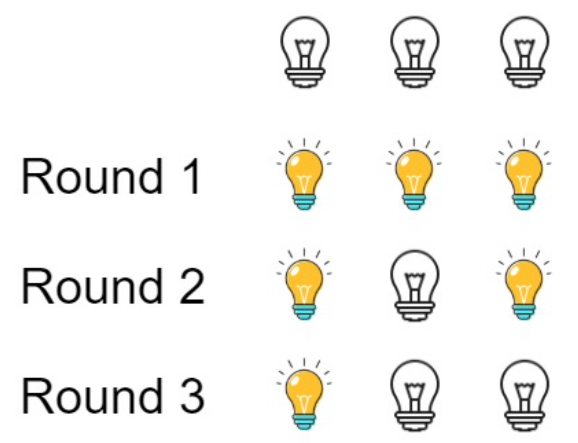

题目：319. 灯泡开关
链接：https://leetcode-cn.com/problems/bulb-switcher/
描述
初始时有 n 个灯泡处于关闭状态。第一轮，你将会打开所有灯泡。接下来的第二轮，你将会每两个灯泡关闭一个。
第三轮，你每三个灯泡就切换一个灯泡的开关（即，打开变关闭，关闭变打开）。第 i 轮，你每 i 个灯泡就切换一个灯泡的开关。直到第 n 轮，你只需要切换最后一个灯泡的开关。
找出并返回 n 轮后有多少个亮着的灯泡。

相关概念
数论：因数个数
- 一个数的因数个数只有在该数为完全平方数的时候才是奇数。
C++ 代码
class Solution {
public:
int bulbSwitch(int n) {
return sqrt(n+0.5);
}
};
python 3 代码
class Solution:
def bulbSwitch(self, n: int) -> int:
return int(sqrt(n + 0.5))
技巧总结
1-n 范围内的完全平方数个数为 sqrt(n)向下取整。